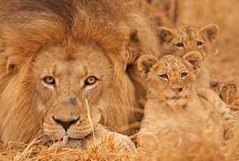
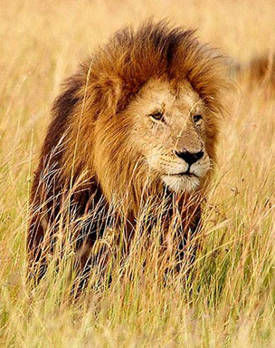
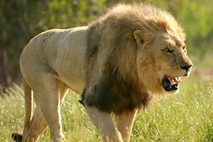

The Last Lions

What is the first animal you think of when you hear Africa? Some will say Zebras, others will say Giraffes, but most will say Lions. Lions are the king of the jungle, and Africa is home to them. But where lions once thrived in the west African region, there are a mere 250 (approx) left. 250 adult lions spread out across 5 countries, including Senegal, Nigeria, Benin, Niger, and Burkina Faso. They are restricted to four isolated and imperiled populations, about 50 lions to each. The West African lions are close to being extinct.
Lion Species

There is something special about the West African Lion; something unique. Although you may not notice it, there are different kinds, different species of lions. The west African lions are closely related to the extinct Barbary lions once found in the Northern parts of Africa. They are also closely similar to the last of the Asiatic lions barely surviving in India. These west African lions are not the common lions you see at parks or in the eastern and southern parts of Africa.
“West African lions have unique genetic sequences not found in any other lions, including in zoos or captivity. If we lose the lion in West Africa, we will lose a unique, locally adapted population found no-where else. It makes their conservation even more urgent." - Read more at: http://www.redorbit.com/news/science/1113043218/west-africa-lion-population-drops-to-250-010914/#JHt0ZdVetwTyWv9Q.99
Causes of Extinction

There are 3 main causes to the West African Lion extinction:
- Humans hunting the lions.
- Humans moving into lions' territories, thus forcing the lions to leave.
- Humans hunting the lions prey, such as gazelles and wildebeests; this also forces their prey to leave, which makes a limited supply for food.
Money can also be listed as a cause; West African governments don't see putting money into conserving the west African lion species as a priority because it doesn't benefit them in any way.
Here is a very inspirational and heart warming video that inspired me to do this topic for this assignment: The Lion Whisperer
I also highly reccomend the movie The Last of Lions to learn more about lions in the wild. The movie is fantastic; a well put together documentary style story of a lioness who braves new hardships in the harsh wild life of Africa.
Source: West African Lion Population